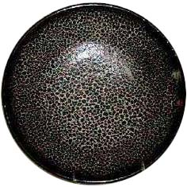
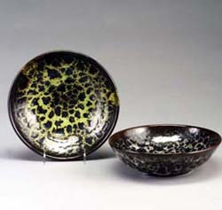

| Harding Black
American studio potter.
The
American studio potter Harding
Black was born in San Antonio, Texas, in 1912. Black had
no formal training, but learnt wheel-throwing from fellow American
potter Rudi Staffel
in 1933. Inspired by Native American pottery, be began hand-building
earthenware in early 1932 and developed a distinguished career that
spanned more than six decades.
In 1933 he was appointed ceramics instructor at the Witte
Museum Archaeological Society, where he established a ceramics
department. In the 1940s he became inspired by Bernard
Leach's A Potter's Book and oriental pottery and worked
with glazes formulated by Arthur Baggs and Edgar Littlefield.

Black established his own studio in San Antonio, Texas in the
1950s. His earliest work was coil-built. Later works were wheel-thrown,
slip-cast or press molded. Black has become known as a glaze master
after many years of research. In 1991 he was elected an honorary
member of NCECA. He retired
from pottery in the late 1990s.
Sadly, Harding Black passed away on 5 May 2004.
More Artists of the Week
More Articles
|